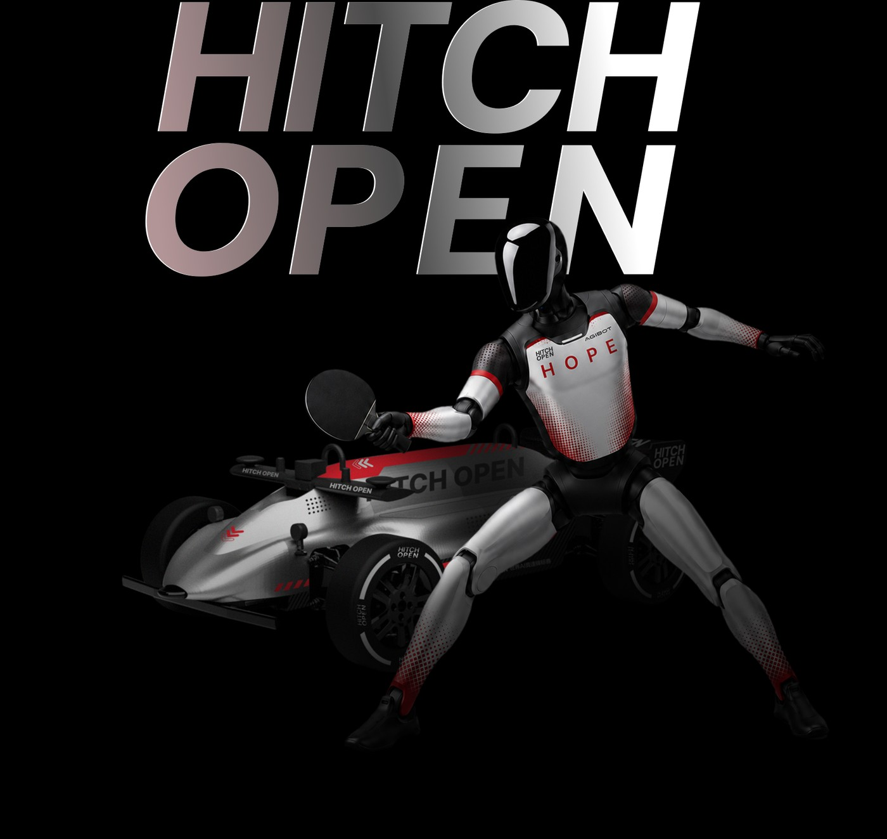

HOPE is Hitch Open's flagship challenge at the frontier of embodied AI. On the high-speed, millisecond-response proving ground of real table tennis, humanoid robots play with no remote control, no scripts, no intervention — closing the perceive–predict–plan–strike loop entirely on their own, toward the world's first technical standard for AI autonomous-decision ping-pong.
Hitch Open is a world-class competition platform for physical AI, using extreme real-world scenarios to test the safety and limits of AI across the “perceive–decide–act” loop — competition that advances research, grows industry, cultivates talent and benchmarks intelligence. In 2025 it set the world autonomous-driving record on Tianmen Mountain’s 99 bends (16′10″838); in 2026 its flagship event HOPE puts humanoid robots at the table-tennis table at the 2nd World Humanoid Robot Games.
Humanoid robots close the perceive–predict–plan–strike loop with no remote control, no scripts, no intervention — an official event of the 2nd World Humanoid Robot Games.
Explore HOPEFully autonomous L4–L5 racing on Tianmen Mountain’s 99 Bends — AI’s first complete perception–decision–action loop in the wild.
Explore Racing28 national and industry-leading outlets reported on the event
50M+ impressions across platforms, with 16M+ engagements
Coverage from six leading universities, reaching over one million young tech audiences
Seven top-tier media organizations, such as Xinhua News Agency, Shanghai Securities News, TMTPost, and CCTV Sports, have provided in-depth examinations of the value of AI physical intelligence
International coverage from Xinhua English, China Daily, and more
The Hitch Open Science and Technology Committee is dedicated to promoting innovation and development in the field of physical intelligence, aiming to incubate phenomenal AI systems and training platforms that benchmark against the highest levels of behavioral intelligence.
Over the past decade, artificial intelligence has achieved milestone breakthroughs in digital domains such as board games, language understanding, and image generation, profoundly changing the perception of the boundaries of machine intelligence. The next phenomenal moment for physical intelligence will occur in the real world—when an AI system can dexterously manipulate objects like a human, navigate and make decisions autonomously in unfamiliar environments, and demonstrate creative problem-solving abilities in dynamic physical scenarios. This moment is truly approaching.
The Committee believes that achieving this breakthrough requires three key pillars: first, building an open, large-scale physical simulation training platform to allow global researchers to train and verify embodied intelligence models in a unified environment; second, establishing evaluation benchmarks that align with the highest human behavioral intelligence to provide a clear measure for technological progress; and third, converging multidisciplinary wisdom through international collaboration to accelerate the transformation from basic research to practical applications.
The arrival of this moment signifies a fundamental transformation for industry—manufacturing, logistics, home services, and medical care fields will welcome a new generation of intelligent systems capable of genuinely understanding and adapting to the physical world, fundamentally changing how humans and machines collaborate. For consumers, it means intelligent technology will move from the screen into every corner of life: household assistants capable of autonomous tidying, safe care partners for the elderly, and flexible travel tools that can cope with complex road conditions. The popularization of physical intelligence will allow everyone to genuinely feel the convenience and safety brought by artificial intelligence in their daily lives.
We will promote the sustainable progress of this emerging technology through global collaboration and knowledge sharing.
We will carefully analyze the future trends in the physical intelligence field, including the evolution of AI's perception, decision-making, and action capabilities in physical environments, to guide forward-looking industry research.
We encourage cross-border technical collaboration and resource sharing, pushing research institutions, enterprises, and experts from various countries to jointly address challenges and achieve mutual benefit and win-win results.
We will organize global forums, seminars, and competitions to inspire innovative ideas and provide a platform for participants to showcase and exchange.
We are committed to enhancing public awareness of the safety of physical intelligence through educational activities, helping consumers understand potential risks and benefits, thereby fostering the safe application and popularization of these technologies.
We will publicly share core algorithms and datasets to support free access and improvement by global developers, promoting the democratic development of physical intelligence technology. Core research papers will be publicly published, model weights and training codes will be released under open licenses, evaluation benchmarks will be open to the global research community, and training platforms will provide open access for academic institutions and independent researchers.
We will actively participate in intergovernmental and international organization policy discussions on physical intelligence safety, providing an enforceable evaluation system for physical intelligence safety through open standards.
Our work emphasis is placed on consumer-oriented applications, ensuring that technological innovation directly serves daily life and enhances everyday user experience and convenience. The Committee will not develop or recommend any specific commercial products, nor will it involve physical intelligence technology that lacks consumer use purposes. Specifically, the scope of the Committee's research and activities does not include applications in the military and aerospace fields.
The Hitch Open Science and Technology Committee will operate independently of the Hitch Open championships and Hitch Interactive, and will hold regular Committee general meetings. The addition or removal of members on the Committee will be decided by the Committee general meeting. The Committee currently consists of the following experts:
Professor, School of Vehicle and Mobility, Tsinghua University
Professor, Department of Electrical Engineering, KAIST University
Chair, AI Racing Program, University of California, Berkeley
We welcome more like-minded experts to join us in shaping the future of physical intelligence.

We are seeking innovative teams, universities and research institutes, and technology partners to push the boundaries of physical AI together.
Interested in participating in 2026 Hitch Open?